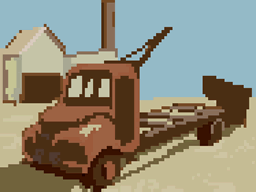
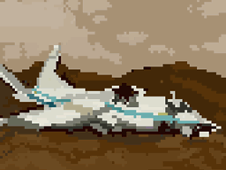
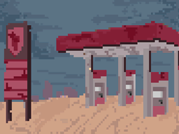
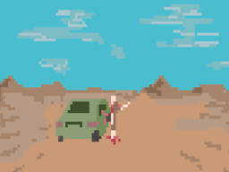
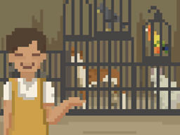

01. 基本信息
行驶事件是会在旅途中触发的一些随机事件, 它们的存在让我们的旅途不至于那么烦闷, 内容包括但不限于受到袭击/遭遇天灾/意外邂逅等等, 结果有可能让你小赚一笔, 但也可能让你命丧荒原, 这类事件的特点在于你始终拥有选择权利, 如果你赶时间(例如在高感染区或送货途中), 或觉得面对的这个事件不划算, 往往可以选择绕路避开甚至无视它们, 不是非得去触发后续, 毕竟有的时候, 好奇害死猫嘛.
目前总共有 42 个行驶事件, 除去"绕路"事件(它是某些事件的后续), 它们都有自己的权重, 既触发的概率, 当前事件权重相加总值为 120, 如"不怀好意的车队"这个事件权重为 2, 则该事件的触发概率就是 2/120, 每行驶 600 公里就会触发一次行驶事件, 部分事件如"落石"和"鼠潮"只在地下(死者国度)才会触发, 如果随机到这些事件但是卡车不在地下, 则本次事件会跳过, 然后重新计算距离.
在事件选项中, 所谓"得到工厂区的普通物资"或"得到农场的普通物资", 是指得到一份相当于在工厂区或农场进行搜刮操作后的物资, 不同地点在搜刮后的收获不同, 这类物资被分为普通和特殊两大类, 普通是指"水/轮胎/汽油/弹药/零件/口粮/书籍"等这些常规物资, 特殊是指"废铁/玻璃/锡箔/纤维/齿轮"等用于合成装备的原材料废品, 关于搜索结果的更多信息, 可以查阅 合成材料.html # 02.搜集地点.
我们简单的以事件触发条件, 将事件分为"地下/地表/通用"这三种, 实际上除了卡车当前所处的位置之外, 有的选项还有其他判断条件, 例如要求你拥有某些资源或团队的某项能力达标, 否则选项便无法被选择, 某些事件还会面临一些战斗挑战, 如果你的队伍战力不强, 建议请谨慎操作, 此外, 为了方便总览和避免剧透, 我们将事件的详情折叠了起来, 你可以通过点击标题或下面的按钮来展开或关闭内容.
通过点击按钮来操作所有事件:
02. 地下事件
01. 落石: 前方道路结构似乎有些不稳定, 时不时有石头落下来, 我们应该怎么办...
 权重: 3
权重: 3
代码: 11118
条件: 当前在地下
# 选项01: 直接冲过去(耗时 30 分钟);
1/2 概率: 有惊无险冲过了落石区(50% 概率某个成员喜欢该事件);
1/2 概率: 落下的石头砸到了我们的车上(卡车减 20 耐久度 / 100% 概率某个成员讨厌该事件);
# 选项02: 看准时机以避开落石(团队注意大于 20);
1/1 概率: 最终我们以高超的车技躲过了落石(050% 概率某个成员喜欢该事件);
# 选项03: 绕路!(拥有 10 汽油 / 耗时 180 分钟);
1/1 概率: (失去 10 汽油 / 050% 概率某个成员讨厌该事件);
02. 鼠潮: 前方突然出现了大量老鼠, 它们看上去已经饿了好久, 我们应该怎么办...
权重: 5
代码: 11119
条件: 当前在地下
# 选项01: 扔一些口粮(拥有 05 口粮);
1/1 概率: 老鼠被食物吸引了过去, 没有袭击我们(失去 5 口粮);
# 选项02: 直接碾过去(耗时 30 分钟);
1/2 概率: 我们有惊无险通过了(080% 概率某个成员喜欢该事件);
1/2 概率: (卡车减 20 耐久度, 100% 概率某个成员讨厌该事件);
03. 水管破裂: 前方道路旁出现了大量积水, 似乎是水管爆开了, 我们应该怎么办...
权重: 3
代码: 11120
条件: 当前在地下
# 选项01: 下车去把水管修好(耗时 180 分钟);
1/1 概率: (所有成员 +1 道德);
# 选项02: 正好装些水(耗时 30 分钟);
1/1 概率: (获得 10 水);
# 选项03: 直接通过;
04. 异常的机器人: 道路旁边站着一个眼睛亮着红光的机器人, 看上去似乎非常的奇怪, 我们决定怎么做...
权重: 2
代码: 11121
条件: 当前在地下
# 选项01: 维修他(团队智力大于 30 / 耗时 120 分钟);
1/1 概率: 线路已经完全老化, 我们没能修好他, 但我们也并不是一无所获(获得 2 旧时代电路);
# 选项02: 拆了他(团队手工大于 20 / 耗时 090 分钟);
1/1 概率: (获得 500 零件);
# 选项03: 无视;
05. 受困的旅行者: "有人吗...谁能来帮帮我..."不远处传来了求救的声音, 原来是一个被困在落石下的旅行者, 我们要做什么...
权重: 2
代码: 11122
条件: 当前在地下
# 选项01: 尝试搬开岩石救他(耗时 120 分钟 / 所有成员 +1 道德);
3/5 概率: 我们没能成功救下他(所有成员 +30 压力 / 100% 概率某个成员讨厌该事件);
2/5 概率: 我们成功救下了他, 他为了感谢我们给了我们一些东西(获得 1 首饰 / 100% 概率某个成员喜欢该事件);
# 选项02: 询问他的名字, 然后把名字刻在石头上(耗时 30 分钟 / 所有成员 -2 道德);
1/1 概率: (所有成员 -100 压力 / 050% 概率某个成员喜欢该事件);
# 选项03: 无视(直接忽略这个事件, 继续前进);
06. 废弃的地铁站: 曾人来人往的地下铁路枢纽, 如今早已停止了运行, 说不定我们还能找到一些好东西...
权重: 5
代码: 11123
条件: 当前在地下
# 选项01: 彻底搜索(耗时 0150 分钟);
1/4 概率: 我们在车厢里找到了很多有用的东西(获得农场的普通物资*2 / 050% 概率某个成员喜欢该事件);
1/4 概率: 我们在某节车厢找到了些有用的东西(获得农场的普通物资*3 / 100% 概率某个成员喜欢该事件);
1/4 概率: 我们打开一节车厢的时候涌出了很多怪物(战斗:感染参数=20 / 100% 概率某个成员讨厌该事件);
1/4 概率: 很遗憾, 我们什么都没找到;
# 选项02: 简单搜索(耗时 0060 分钟);
1/2 概率: 被我们打开的车厢里面居然有丧尸(战斗:感染参数=20);
1/2 概率: 最后我们在火车头里翻出了一些物资(获得农场的普通物资*2 / 050% 概率某个成员喜欢该事件);
# 选项03: 继续前进;
07. 遗落的武器库: 在隧道涵洞发现了前世代遗留的武器库, 很多武器已经锈蚀了...
权重: 2
代码: 11124
条件: 当前在地下
# 选项01: 看看还有没有能用的东西(耗时 60 分钟);
1/2 概率: 找到一些物资(获得 50 弹药);
1/2 概率: 我们什么也没找到;
# 选项02: 去深处看看吧(耗时 90 分钟);
1/5 概率: 我们什么也没找到;
2/5 概率: 冲出来一群丧尸(战斗:感染参数=30);
2/5 概率: 我们还是找到一些物资(获得 1 鸟枪或 1 土枪或 1 简易手枪);
# 选项03: 看看能不能修好一些武器(团队手工大于 25 / 耗时 180 分钟);
2/3 概率: 成功了!(获得 1 鸟枪或 1 土枪或 1 简易手枪);
1/3 概率: 我们失败了, 这里的武器都锈成渣了;
# 选项04: 让我们再仔细观察一下吧(团队注意大于 30 / 耗时 120 分钟);
1/3 概率: 我们失败了, 这里的武器都锈成渣了;
2/3 概率: (获得 2 军用手雷);
# 选项05: 离开;
03. 地表事件
01. 废旧的货车: 我们在行驶的过程中注意到了有一辆废弃的货车, 货箱呈半掩的状态, 我们要去查看一下吗...
权重: 2
代码: 212
条件: 地下不触发
# 选项01: 彻底搜索(耗费 0180 分钟);
1/3 概率: 我们在这辆车子里面找到了它前主人留下的很多东西(获得农场的普通物资*2 / 100% 概率某个成员喜欢该事件);
1/3 概率: 一个废旧包裹(获得农场的普通物资*1 / 50% 概率某个成员喜欢该事件);
1/3 概率: 可惜, 我们什么都没有找到;
# 选项02: 简单搜索(耗费 0060 分钟);
1/2 概率: 什么! 车子里面居然有丧尸(战斗:感染参数=15);
1/2 概率: 翻出一些物资(获得农场的普通物资*2 / 50% 概率某个成员喜欢该事件);
# 选项03: 继续前进;
02. 废旧的火车: 一条铁轨横亘在我们前进的路途中, 上面有辆废旧的火车, 车厢已大多从铁轨上脱出了, 我们要去查看一下吗...
权重: 2
代码: 213
条件: 地下不触发
# 选项01: 彻底搜索(耗费 0150 分钟);
1/4 概率: 我们在某节车厢找到了些有用的东西(获得农场的普通物资*3 / 100% 概率某个成员喜欢该事件);
1/4 概率: 我们在车厢里找到了很多有用的东西(获得农场的普通物资*2 / 050% 概率某个成员喜欢该事件);
1/4 概率: 我们在打开某一节车厢时涌出了很多怪物(战斗:感染参数=20 / 100% 概率某个成员讨厌该事件);
1/4 概率: 可惜, 我们什么都没有找到;
# 选项02: 简单搜索(耗费 0060 小时);
1/2 概率: 什么! 车厢里面居然有丧尸(战斗:感染参数=20);
1/2 概率: 翻出一些物资(获得农场的普通物资*2 / 50% 概率某个成员喜欢该事件);
# 选项03: 继续前进;
03. 坠落的飞机: 一架坠落的飞机出现在正前方, 焦黑的机体显示它坠落后曾发生过激烈的爆炸, 我们要去查看一下吗...
权重: 2
代码: 214
条件: 地下不触发
# 选项01: 彻底搜索(耗费 0180 分钟);
1/2 概率: 我们搜集了散落的一些物资(获得农场的普通物资*2 / 50% 概率某个成员喜欢该事件);
1/2 概率: 很遗憾, 我们什么都没找到;
# 选项02: 简单搜索(耗费 0060 小时);
1/2 概率: 我们什么都没找到(25% 概率某个成员讨厌该事件);
1/2 概率: 我们在机舱里找到很多物品(获得农场的普通物资*1 / 25% 概率某个成员喜欢该事件);
# 选项03: 继续前进;
04. 加油站: 一座加油站出现在地平线上, 毫无疑问应该已经被抛弃多时了, 要顺路去看看有没有什么物资吗...
权重: 3
代码: 217
条件: 地下不触发
# 选项01: 彻底搜索(耗费 0180 分钟);
1/4 概率: 我们在加油站的便利店里收集到了不少物资(获得加油站的普通物资*3 / 100% 概率某个成员喜欢该事件);
1/4 概率: 我们在加油站里搜集了不少物资(获得加油站的普通物资*2 / 50% 概率某个成员喜欢该事件);
1/4 概率: 加油站冲出来了一群丧尸(战斗:感染参数=15 / 100% 概率某个成员讨厌该事件);
1/4 概率: 可惜, 我们什么都没找到;
# 选项02: 简单搜索(耗费 0060 小时);
1/2 概率: 我们在加油站的仓库里面收集到了不少物资(获得加油站的普通物资*1 / 050% 概率某个成员喜欢该事件);
1/2 概率: 我们打开加油站的门后遇到了一群丧尸(战斗:感染参数=20 / 80% 概率某个成员讨厌该事件);
# 选项03: 继续前进;
05. 仙人掌丛: 一片巨大的仙人掌丛挡在我们前方, 从远处可发现, 有些仙人掌甚至有数十米高, 应该怎么做...
权重: 4
代码: 223
条件: 地下不触发
# 选项01: 冲过仙人掌丛;
1/2 概率: 运气还不错, 我们成功的冲过了仙人掌群;
1/2 概率: 仙人掌还是擦伤了我们的车体(卡车减 20 耐久度 / 50% 概率某个成员讨厌该事件);
# 选项02: 焚烧仙人掌(拥有 25 汽油);
1/1 概率: 大火烧出了一条路(失去 25 汽油 / 耗时 30 分钟);
# 选项03: 绕路吧;
1/1 概率: (触发 # 绕路 事件);
06. 绿洲: 从望远镜中发现, 远处有一片绿洲, 蓝色的水面和碧绿的树叶随风飘曳, 也许我们应该休息一下了...
权重: 4
代码: 224
条件: 地下不触发
# 选项01: 前往绿洲;
2/3 概率: 我们在绿洲休息了很久, 真希望能再呆下去(疲劳压力减少 20 休息参数量但不耗时间 / 50% 概率某个成员喜欢该事件);
1/3 概率: 无论怎样都无法接近绿洲, 后来我们才意识到那是海市蜃楼(耗时行驶 20km 所需时间 / 50% 概率某个成员讨厌该事件);
# 选项02: 继续前进;
07. 废弃的船: 一条废弃的船出现在路旁, 上面锈迹斑斑, 也许是曾经的河床干涸了, 我们应该去查看一下吗...
权重: 2
代码: 226
条件: 地下不触发
# 选项01: 搜索一下(耗时 90 分钟);
1/3 概率: 最后, 我们在船底的货舱里面还是找到了一些物资(获得农场的普通物资*1 / 50% 概率某个成员喜欢该事件);
1/3 概率: 涌出一群丧尸(战斗:感染参数=20 / 50% 概率某个成员讨厌该事件);
1/3 概率: 遗憾, 我们什么都没找到;
# 选项02: 继续前进;
08. 龙卷风: 一场巨大的龙卷风暴出现在了地平线的远处...
权重: 2
代码: 232
条件: 地下不触发
# 选项01: 强行前进;
1/3 概率: 奇迹, 龙卷风改道了(100% 概率某个成员喜欢该事件);
2/3 概率: 龙卷风掀起的巨物砸坏了我们的车辆(卡车减 20 耐久度 / 100% 概率某个成员讨厌该事件);
# 选项02: 等待龙卷风停止(耗时 180 分钟);
09. 飞机营地: 一架坠毁的飞机, 似乎有人把那里当成了营地...
权重: 3
代码: 238
条件: 地下不触发
# 选项01: 去看看;
1/3 概率: (触发 工具事件.html # 商队 / 050% 概率某个成员喜欢该事件);
1/3 概率: (触发 工具事件.html # 旅行者 / 050% 概率某个成员喜欢该事件);
1/3 概率: (触发 工具事件.html # 遭遇匪徒 / 100% 概率某个成员讨厌该事件);
# 选项02: 观察一下(团队注意大于 25);
1/3 概率: 我们看到他们身边摆放着各种货物和旅行装备, 一看就不是危险的人(触发 工具事件.html # 商队);
1/3 概率: 我们看到他们身边摆放着各种货物和旅行装备, 一看就不是危险的人(触发 工具事件.html # 旅行者);
1/3 概率: 我们看到他们身边摆放着各种武器和尸体, 一看就是非常危险的人啊(触发 工具事件.html # 匪徒营地);
# 选项03: 无视;
10. 加油站营地: 有个废弃的加油站, 似乎有人把这里当成了营地...
权重: 2
代码: 239
条件: 地下不触发
# 选项01: 去看看;
1/4 概率: (触发 工具事件.html # 商队 / 050% 概率某个成员喜欢该事件);
1/4 概率: (触发 工具事件.html # 旅行者 / 050% 概率某个成员喜欢该事件);
2/4 概率: (触发 工具事件.html # 遭遇匪徒 / 100% 概率某个成员讨厌该事件);
# 选项02: 观察一下(团队注意大于 30);
1/3 概率: 我们看到他们身边摆放着各种货物和旅行装备, 一看就不是危险的人(触发 工具事件.html # 商队);
1/3 概率: 我们看到他们身边摆放着各种货物和旅行装备, 一看就不是危险的人(触发 工具事件.html # 旅行者);
1/3 概率: 我们看到他们身边摆放着各种武器和尸体, 一看就是非常危险的人啊(触发 工具事件.html # 匪徒营地);
# 选项03: 无视;
11. 小水池: 有个小水池, 里面好像有鱼(又好像莫得), 要不碰碰运气...
权重: 5
代码: 9252
条件: 地下不触发
# 选项01: 是时候展现钓鱼技巧了(团队钓鱼大于 08 / 耗时 30 分钟);
1/4 概率: 什么也没有, 这就是个臭水沟;
1/4 概率: 获得 6 螃蟹;
1/4 概率: 获得 6 大虾;
1/4 概率: 获得 6 鱼;
# 选项02: 碰碰运气(耗时 60 分钟);
3/6 概率: 这就只是个臭水沟;
1/6 概率: 获得 3 螃蟹;
1/6 概率: 获得 3 大虾;
1/6 概率: 获得 3 鱼;
# 选项03: 继续前进;
12. 灌木丛: 有片灌木丛, 里面好像有小动物(又好像莫得), 要不碰碰运气...
权重: 5
代码: 9253
条件: 地下不触发
# 选项01: 是时候展现打猎技巧了(团队狩猎大于 10 / 耗时 30 分钟);
1/4 概率: 什么也没有, 就是个破灌木丛;
1/4 概率: 获得 5 鹌鹑;
1/4 概率: 获得 5 狍子;
1/4 概率: 获得 5 兔;
# 选项02: 碰碰运气(耗时 60 分钟);
3/6 概率: 就只是个破灌木丛;
1/6 概率: 获得 2 鹌鹑;
1/6 概率: 获得 2 狍子;
1/6 概率: 获得 2 兔;
# 选项03: 继续前进;
04. 通用事件
01. 不怀好意的车队: 一个车队出现在我们的视野中, 烟尘滚滚, 他们都带着各式武器, 看起来不怀好意...
权重: 2
代码: 201
条件: 无限制条件
# 选项01: 准备接敌;
2/3 概率: 开始战斗!(触发 工具事件.html # 遭遇匪徒);
1/3 概率: 他们从我们身边开过, 并不理我们, 看来是我们过度紧张了(100% 概率某个成员喜欢该事件);
# 选项02: 加速逃跑(拥有 40 汽油);
1/1 概率: 很快的我们就甩开了这个车队(失去 40 汽油);
02. 废旧的汽车: 路边有一辆废旧的汽车, 车窗已经破碎了, 轮胎也是不知所踪, 我们要不要去查看一下...
权重: 2
代码: 211
条件: 无限制条件
# 选项01: 彻底搜索(耗费 0180 分钟);
1/3 概率: 通过仔细搜索, 我们在车里找到了前主人留下的很多东西(获得工厂区的普通物资*2 / 100% 概率某个成员喜欢该事件);
1/3 概率: 找到一个废旧旅行包(获得工厂区的普通物资*1 / 50% 概率某个成员喜欢该事件);
1/3 概率: 非常可惜, 最后我们还是什么都没有找到;
# 选项02: 简单搜索(耗费 0060 分钟);
1/2 概率: 后备箱翻出一些物资(获得工厂区的普通物资*2 / 50% 概率某个成员喜欢该事件);
1/2 概率: 可惜, 我们什么都没有找到;
# 选项03: 继续前进;
03. 集装箱: 一些集装箱横七竖八地散落在前方空地上, 显然是出于什么目的把它们抛弃, 要搜索一下吗...
权重: 2
代码: 215
条件: 无限制条件
# 选项01: 彻底搜索(耗费 0180 分钟);
1/4 概率: 撬开集装箱, 找到了很多东西(获得军事基地的普通物资*3 / 100% 概率某个成员喜欢该事件);
1/4 概率: 我们竟然找到了一些军事物资(获得军事基地的普通物资*2 / 050% 概率某个成员喜欢该事件);
1/4 概率: 集装箱里竟然装着丧尸, 真是太可怕了(战斗:感染参数=25 / 100% 概率某个成员讨厌该事件);
1/4 概率: 可惜, 我们什么都没有找到;
# 选项02: 简单搜索(耗费 0060 小时);
1/2 概率: 我们竟然找到了一些军事物资(获得军事基地的普通物资*1 / 025% 概率某个成员喜欢该事件);
1/2 概率: 集装箱里竟然装着丧尸, 真是太可怕了(战斗:感染参数=20 / 100% 概率某个成员讨厌该事件);
# 选项03: 继续前进;
04. 木箱: 一些木箱散落在前方不远处, 箱子表面看得出已经腐朽发黑, 但似乎还很完好, 要去搜一下吗...
权重: 2
代码: 216
条件: 无限制条件
# 选项01: 彻底搜索(耗费 0120 分钟);
1/2 概率: 我们什么都没找到(20% 概率某个成员讨厌该事件);
1/2 概率: 我们撬开木箱后找到了一些物资, 看起来完好无损(获得军事基地的普通物资*2 / 100% 概率某个成员喜欢该事件);
# 选项02: 简单搜索(耗费 0060 小时);
1/2 概率: 我们什么都没找到(20% 概率某个成员讨厌该事件);
1/2 概率: 我们撬开木箱后找到了一些物资, 看起来有些废旧(获得军事基地的普通物资*1 / 020% 概率某个成员喜欢该事件);
# 选项03: 继续前进;
05. 路障: 一堆路障横亘在前方, 一直延伸到地平线处, 不少载具都撞在上面并损坏了, 我们应该怎么办...
权重: 4
代码: 218
条件: 无限制条件
# 选项01: 冲过路障;
1/3 概率: 成功冲过了路障(50% 概率某个成员喜欢该事件);
1/3 概率: 冲过路障动静太大, 引来一群丧尸(战斗:感染参数=20 / 50% 概率某个成员讨厌该事件);
1/3 概率: 我们冲过了路障, 但防撞杆和车头收到了一定损坏, 车辆耐久减少(卡车减 20 耐久度 / 50% 概率某个成员讨厌该事件);
# 选项02: 拆除路障(拥有 50 零件);
1/2 概率: 虽然花了些时间, 我们拆除成功了(耗时 20 分钟 / 失去 50 零件);
1/2 概率: 最后我们也未能拆除路障, 还得绕路(耗时 20 分钟 / 失去 50 零件 / 100% 概率某个成员讨厌该事件 / 触发 # 绕路);
# 选项03: 直接绕路;
1/1 概率: (触发 # 绕路 事件);
06. 废弃的坦克: 路边有一条沟, 一辆坦克停在里面, 看起来在为什么行动做准备, 我们要去查看一下吗...
权重: 2
代码: 220
条件: 无限制条件
# 选项01: 彻底搜索(耗费 0150 分钟);
1/4 概率: 我们在坦克内搜到了大量的军事物资(获得军事基地的普通物资*3 / 100% 概率某个成员喜欢该事件);
1/4 概率: 我们在坦克的弹药舱搜到了大量物资(获得军事基地的普通物资*2 / 050% 概率某个成员喜欢该事件);
1/4 概率: 我们搜寻的动静过大, 竟然惊动了四周的丧尸(战斗:感染参数=20 / 050% 概率某个成员讨厌该事件);
1/4 概率: 很遗憾, 我们什么都没找到;
# 选项02: 简单搜索(耗费 0060 小时);
1/2 概率: 怎么回事, 坦克的驾驶舱内竟然藏着大量丧尸(战斗:感染参数=40 / 100% 概率某个成员讨厌该事件);
1/2 概率: 我们在坦克的乘员舱搜到了大量物资(获得军事基地的普通物资*1 / 050% 概率某个成员喜欢该事件);
# 选项03: 继续前进;
07. 废弃的装甲车: 一辆废弃的装甲车出现在路边, 舱门是打开着的, 上面的武器不知所踪, 我们应该去查看一下吗...
权重: 1
代码: 221
条件: 无限制条件
# 选项01: 彻底搜索(耗费 0120 分钟);
1/2 概率: 我们在装甲车内找到了一些物资(获得军事基地的普通物资*2 / 100% 概率某个成员喜欢该事件);
1/2 概率: 很遗憾, 我们什么都没找到;
# 选项02: 简单搜索(耗费 0060 小时);
1/2 概率: 我们在机舱里面找到了很多物品(获得军事基地的普通物资*1 / 050% 概率某个成员喜欢该事件);
1/2 概率: 很遗憾, 我们什么都没找到;
# 选项03: 继续前进;
08. 旅行者的尸体: 路边有一群人的尸体, 从装备看应该是一群旅行者, 他们可能是遭遇了什么意外或物资不足, 我们该怎么做...
权重: 2
代码: 222
条件: 无限制条件
# 选项01: 搜索一下(耗时 60 分钟 / 某个成员 -1 道德);
1/3 概率: 从尸体上找到一些物资, 但这样真的好吗(获得农场的普通物资*1);
1/3 概率: 怎么回事, 这些尸体竟然活过来了! (战斗:感染参数=10 / 100% 概率某个成员讨厌该事件);
1/3 概率: 什么也没有找到;
# 选项02: 掩埋尸体(耗时 30 分钟 / 所有成员 +2 道德);
1/2 概率: 怎么回事, 这些尸体居然活过来了! (战斗:感染参数=10 / 100% 概率某个成员讨厌该事件);
1/2 概率: 愿他们能够安息;
# 选项03: 继续前进;
09. 干涸的河床: 一片干涸的河床出现在我们前方, 可以看到河床底部的土地已经龟裂, 我们应该怎么做...
权重: 2
代码: 225
条件: 无限制条件
# 选项01: 通过河床;
1/2 概率: 顺利通过(耗时 30 分钟 / 20% 概率某个成员喜欢该事件);
1/2 概率: 我们的车在河床中熄火了, 好在最后花了些时间推出来了(耗时 200 分钟 / 50% 概率某个成员讨厌该事件);
# 选项02: 直接绕路;
1/1 概率: (触发 # 绕路 事件);
10. 流浪的小狗: 我们注意到路边有只流浪小狗, 不停地冲我们叫唤, 我们应该怎么做...
权重: 3
代码: 227
条件: 无限制条件
# 选项01: 喂食小狗(拥有 1 口粮);
1/3 概率: 小狗吃了东西, 开心地走掉了(失去 1 口粮);
1/3 概率: 小狗突然发狂, 咬伤了人!(获取一个 1~100 的随机数, 某个成员的防御小于该数字则该成员受伤);
1/3 概率: 小狗吃了东西, 带我们去他的窝, 在那里竟然有一个物资箱(获得农场的普通物资*1 / 100% 概率某个成员喜欢该事件);
# 选项02: 看看小狗说什么(某个成员拥有"动物密友"特性, 如果不符合条件则不显示该选项);
1/3 概率: 小狗带我们去他的窝, 竟然有一个物资箱(获得农场的普通物资*1);
1/3 概率: 小狗想要加入我们(2/3 获得猎犬, 1/3 获得斗犬);
1/3 概率: 这是条疯狗, 我们还是离远一点好;
# 选项03: 收养小狗(拥有 10 口粮);
2/6 概率: 获得一条猎犬(失去 10 口粮);
1/6 概率: 获得一条斗犬(失去 10 口粮);
3/6 概率: 小狗并没有吃我们的食物, 跑掉了;
# 选项04: 捕猎小狗(团队狩猎大于 10);
1/1 概率: if(某个成员拥有"动物密友"特性){ 队伍中的动物爱好者阻止我们这么做! }else{ 获得 4 口粮 };
# 选项05: 继续前进;
11. 落单的汽车: 地平线上出现了一阵烟尘, 似乎是一辆落单的车, 我们要靠近看看吗...
权重: 3
代码: 228
条件: 无限制条件
# 选项01: 接近汽车(耗时行驶 10km 所需的时间 / 消耗行驶 10km 所需的汽油);
1/3 概率: 他是个商人, 想要和我们交易一下(触发 工具事件.html # 交易);
1/3 概率: 他是个商人, 想要和我们交易一下(触发 工具事件.html # 珍兽商人);
1/3 概率: 车开得太快了, 我们没能追上;
# 选项02: 继续前进;
12. 旅行者: 一位孤独的旅行者在路边不远处向我们招手, 似乎想搭顺风车, 该怎么做...
权重: 2
代码: 229
条件: 无限制条件
# 选项01: 让它上车;
1/3 概率: 他付了些钱然后下车了(获得 100 零件/ 50% 概率某个成员喜欢该事件);
1/3 概率: 他下车后我们才发现他偷了东西(损失 1 随机物品 / 100% 概率某个成员讨厌该事件);
1/3 概率: 我们聊得很投机, 他想加入我们的旅程(某个随机 NPC 加入我们 / 100% 概率某个成员喜欢该事件);
# 选项02: 继续前进;
13. 车队: 一个庞大的车队出现在我们的视野中, 远处烟尘滚滚, 应该靠近交流一下吗...
权重: 3
代码: 230
条件: 无限制条件
# 选项01: 靠近车队(耗时行驶 10km 所需的时间 / 消耗行驶 10km 所需的汽油);
1/3 概率: 他们是个商队, 想要和我们交易一下(触发 工具事件.html # 交易);
1/3 概率: 是个商队, 想要和我们交易一下(触发 工具事件.html # 狗狗商人);
1/3 概率: 车开的太快了, 我们没能追上;
# 选项02: 继续前进;
14. 阻塞: 我们经过一座废弃的大桥, 上面横着大量废弃的车辆...
权重: 3
代码: 231
条件: 无限制条件
# 选项01: 强行通过;
1/3 概率: 车辆间的缝隙比看起来更小, 车体被擦伤了(耗时 30 分钟 / 卡车减 10 耐久度 / 100% 概率某个成员讨厌该事件);
1/3 概率: 车辆间的缝隙比看起来更大, 我们很快便顺利的通过了(耗时 30 分钟 / 100% 概率某个成员喜欢该事件);
1/3 概率: 道路比看上去更加危险, 我们花了很多时间(耗时 150 分钟 / 50% 概率某个成员讨厌该事件 );
# 选项02: 直接绕路;
1/1 概率: (触发 # 绕路 事件);
15. 毒雾: 一阵毒雾出现在了前方的道路上, 似乎在慢慢地向我们飘来了...
权重: 2
代码: 233
条件: 无限制条件
# 选项01: 冲过毒雾(拥有 040 汽油 / 耗时 060 分钟 / 失去 040 汽油);
1/3 概率: 毒雾比想象的更薄, 我们很快冲了过去, 每个人都心有余悸(50% 概率某个成员喜欢该事件);
2/3 概率: 毒雾比想象的更厚, 紧闭车窗还是有毒雾漏进来(获取一个 1~100 的随机数, 某个成员的防御小于该数字则该成员受伤);
# 选项02: 加速冲过(拥有 100 汽油 / 耗时 060 分钟 / 失去 100 汽油);
2/3 概率: 毒雾比想象的更薄, 我们很快冲了过去, 每个人都心有余悸(50% 概率某个成员喜欢该事件);
1/3 概率: 毒雾比想象的更厚, 紧闭车窗还是有毒雾漏进来(获取一个 1~100 的随机数, 某个成员的防御小于该数字则该成员受伤);
# 选项03: 逃离毒雾(拥有 020 汽油 / 耗时 180 分钟 / 失去 020 汽油);
2/5 概率: 我们掉转车头很快逃离了危险, 看着毒雾远去大家心有余悸(50% 概率某个成员喜欢该事件);
3/5 概率: 尽管我们及时调转了车头, 仍有毒雾追上了我们(获取一个 1~100 的随机数, 某个成员的防御小于该数字则该成员受伤);
# 选项04: 加速逃离(拥有 050 汽油 / 耗时 180 分钟 / 失去 050 汽油);
3/5 概率: 我们掉转车头很快逃离了危险, 看着毒雾远去大家心有余悸(50% 概率某个成员喜欢该事件);
2/5 概率: 尽管我们及时调转了车头, 仍有毒雾追上了我们(获取一个 1~100 的随机数, 某个成员的防御小于该数字则该成员受伤);
16. 尸潮: 潮水般的丧尸, 从地平线边缘开始, 铺天盖地的出现了, 令人触目惊心...
 权重: 2
权重: 2
代码: 234
条件: 无限制条件
# 选项01: 冲过尸潮;
1/3 概率: 我们成功发现并穿梭于尸群薄弱的地方, 很快便逃离了这片地狱(100% 概率某个成员喜欢该事件);
1/3 概率: 我们冲了两下卡车便无法动弹了, 战斗已经不可避免(战斗:感染参数=60 / 100% 概率某个成员讨厌该事件);
1/3 概率: 我们成功冲过了尸群, 不时有丧尸爬上卡车, 卡车遭受重大损伤(卡车减 30 耐久度 / 100% 概率某个成员讨厌该事件);
# 选项02: 加速逃离(拥有 60 汽油 / 耗时 250 分钟);
1/1 概率: 我们选择逃走, 只不过这下废的时间可就多了很多(过时间的时候感染度不增加 / 失去 60 汽油);
# 选项03: 战斗(战斗:感染参数=60);
17. 汽车营地: 我们遇到一个幸存者的营地, 他们用车辆支起了商铺, 似乎在兜售什么东西...
权重: 5
代码: 235
条件: 无限制条件
# 选项01: 看看(20% 概率某个成员喜欢该事件);
1/2 概率: (触发 工具事件.html # 旅行者);
1/2 概率: (触发 工具事件.html # 商队);
# 选项02: 观察一下(团队注意大于 10);
1/2 概率: 我们看到他们身边摆放着各种货物和旅行装备, 一看就不是危险的人(触发 工具事件.html # 商队);
1/2 概率: 我们看到他们身边摆放着各种货物和旅行装备, 一看就不是危险的人(触发 工具事件.html # 旅行者);
# 选项03: 无视;
18. 皮卡营地: 我们遇到了一群幸存者, 他们似乎在原地休息着...
权重: 5
代码: 236
条件: 无限制条件
# 选项01: 看看(20% 概率某个成员喜欢该事件);
1/2 概率: (触发 工具事件.html # 旅行者);
1/2 概率: (触发 工具事件.html # 商队);
# 选项02: 观察一下(团队注意大于 15);
1/2 概率: 我们看到他们身边摆放着各种货物和旅行装备, 一看就不是危险的人(触发 工具事件.html # 商队);
1/2 概率: 我们看到他们身边摆放着各种货物和旅行装备, 一看就不是危险的人(触发 工具事件.html # 旅行者);
# 选项03: 无视;
19. 火车营地: 前方的铁轨上有一辆废弃的火车, 袅袅的炊烟似乎预示着那里应该有人居住...
权重: 4
代码: 237
条件: 无限制条件
# 选项01: 去看看;
1/3 概率: (触发 工具事件.html # 商队 / 050% 概率某个成员喜欢该事件);
1/3 概率: (触发 工具事件.html # 旅行者 / 050% 概率某个成员喜欢该事件);
1/3 概率: (触发 工具事件.html # 遭遇匪徒 / 100% 概率某个成员讨厌该事件);
# 选项02: 观察一下(团队注意大于 20);
1/3 概率: 我们看到他们身边摆放着各种货物和旅行装备, 一看就不是危险的人(触发 工具事件.html # 商队);
1/3 概率: 我们看到他们身边摆放着各种货物和旅行装备, 一看就不是危险的人(触发 工具事件.html # 旅行者);
1/3 概率: 我们看到他们身边摆放着各种武器和尸体, 一看就是非常危险的人啊(触发 工具事件.html # 匪徒营地);
# 选项03: 无视;
20. 坦克营地: 我们发现了一辆废弃坦克, 车身锈迹斑驳, 看起来早就不能用了, 似乎有人把这里当成了营地...
权重: 2
代码: 240
条件: 无限制条件
# 选项01: 去看看;
1/3 概率: (触发 工具事件.html # 商队 / 050% 概率某个成员喜欢该事件);
1/3 概率: (触发 工具事件.html # 旅行者 / 050% 概率某个成员喜欢该事件);
1/3 概率: (触发 工具事件.html # 遭遇匪徒 / 100% 概率某个成员讨厌该事件);
# 选项02: 观察一下(团队注意大于 40);
1/4 概率: 我们看到他们身边摆放着各种货物和旅行装备, 一看就不是危险的人(触发 工具事件.html # 商队);
1/4 概率: 我们看到他们身边摆放着各种货物和旅行装备, 一看就不是危险的人(触发 工具事件.html # 旅行者);
2/4 概率: 我们看到他们身边摆放着各种武器和尸体, 一看就是非常危险的人啊(触发 工具事件.html # 匪徒营地);
# 选项03: 无视;
21. 丧尸旅者: 你发现一个丧尸在远处看着你, 不过他似乎对你没有敌意, "嘿! ", 丧尸吼道, "有吃的穿的吗你们, 高价收购"...
权重: 5
代码: 9254
条件: 无限制条件
# 选项01: 我们有一些食物(拥有 3 尸肉);
1/1 概率: (失去 3 尸肉 / 获得 1 首饰);
# 选项02: 我们有一些美食(拥有 3 人肉);
1/1 概率: (失去 3 人肉 / 获得 1 文物);
# 选项03: 我们有一些衣服(拥有 2 衣服);
1/1 概率: (失去 2 衣服 / 获得 2 电路);
# 选项04: 走了;
22. 动物商人: 地平线上出现了一个营地, 营地里有各种奇奇怪怪的动物, 这是个动物商人...
权重: 4
代码: 9258
条件: 无限制条件
# 选项01: 看看狗狗(触发 工具事件.html # 狗狗商人);
# 选项02: 看看珍兽(触发 工具事件.html # 珍兽商人);
# 选项03: 走了;
23. 绕路: 我们需要绕路前进了(该事件是"路障/仙人掌丛/干涸的河床/阻塞..."等事件解决失败的后续操作)...
权重: 0
代码: 219
条件: 无限制条件
# 选项01: 绕路吧(拥有 10 汽油 / 耗时 200 分钟);
1/1 概率: (失去 10 汽油 / 这个事件较为特殊, 虽然条件是要拥有 10 汽油, 但没有也会触发该事件, 汽油耗尽游戏将直接结束);